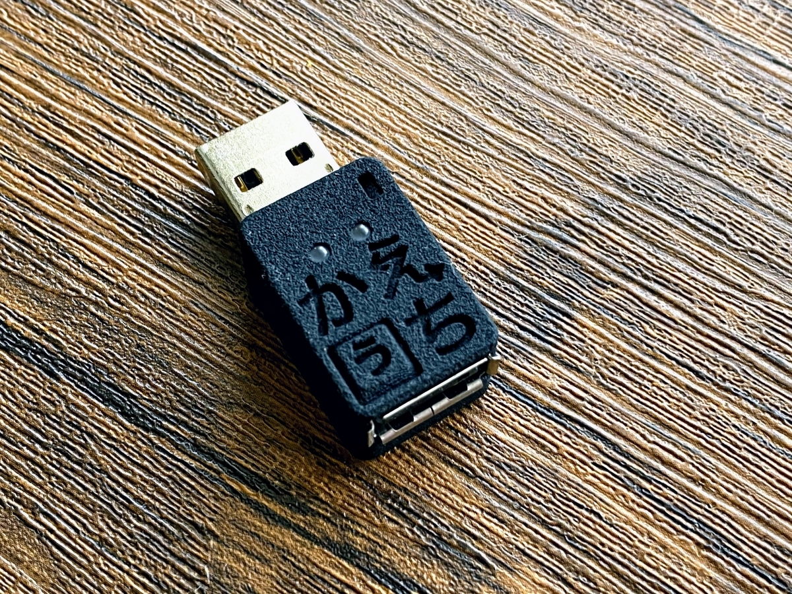

投稿日: 2020/08/12 12:03:58
カテゴリ: 親指シフト
サムネイル: 
ついに「かえうち２」が届いた！すっかり配列沼にハマってしまった感が…。
早速、薙刀式v7の設定ファイルをもとに、薙刀式v12の設定を作成。あんまり完成度が高くないのでフォーラムに投稿するかは迷うけど、一応シェア。
レイヤー構造は超複雑なので、もとの薙刀式v7版の解説を参照のこと。
薙刀式v7版からの変更点は以下の通り。
なお、３打同時打鍵のためにはレイヤー数が明らかに足りないので、「ふ＋゜＋い＝ふぃ」などの外来語の対応は、基本的に「ふ＋い＝ふぃ」としている。ただし「う＋い＝うぃ」など、普段遣いで誤判定が頻発するものは省くなど微調整しており、あまり使わない拗音は小書きキーを使う前提。（タイピングゲームとかでは打ちづらいけれど、普段遣いの場合は推測変換があるので今のところ問題はない。）
31レイヤーをフルに使っている関係で、デバッグが超大変だったのでまだミスがあるかもしれない。都度更新していく予定。
ちなみに自分はUSB2BT+と組み合わせてiPadで使っている。USB2BT+はすごく優秀で、単体でも親指シフト機能があるので、NICOLA配列ならかえうち不要で親指シフトが打てる。
ただ、かえうち２と組み合わせると、たまにかな入力の一部が途切れたりと相性問題みたいなことが発生するっぽい。発生頻度は低いので、今のところ我慢して使っている。